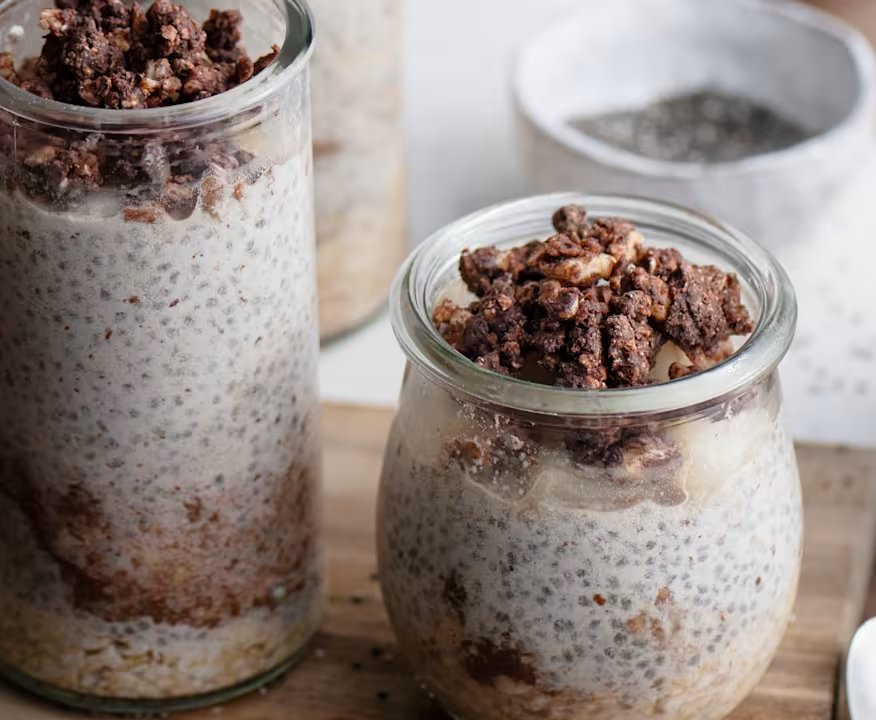

Porridge au chocolat et à la poire
Ingrédients
4×
- 60 g de chocolat noir
- 50 g de noisettes grillées
- 60 g de flocons d'avoine
- 500 g de lait
- 1 c. à c. d'extrait de vanille
- 30 g de sucre de dattes
- 1 pincée de sel
- 50 g de graines de chia
- 150 g de yaourt à la grecque
- 150 g de poires

À préparer la veille.
Préparation
Étape 1
Hacher 60 g de chocolat noir 10 sec/vitesse 7. Ajouter 50 g de noisettes grillées et hacher 10 sec/vitesse 4.5.
Répartir la moitié dans 4 pots en verre, réserver le reste.
Étape 2
Mettre 60 g de flocons d'avoine, 500 g de lait, 1 c. à c. d'extrait de vanille, 30 g de sucre de dattes et 1 pincée de sel dans le bol. Chauffer Réchauffage/75ºC/vitesse 2.
Étape 3
Ajouter 50 g de graines de chia et 150 g de yaourt à la grecque, mélanger 30 sec/vitesse 3. Verser dans les pots et ajouter 150 g de poires en dés.
Laisser reposer une nuit au réfrigérateur.
Étape 4
Sortir 10min avant de servir et décorer du reste de chocolat-noisettes.
Conseils
- Variantes : amandes au lieu des noisettes, flocons sans gluten, boisson à l’amande au lieu du lait, 20g de sucre de canne.
Résumé
60 g de chocolat noir
50 g de noisettes grillées
Hacher 10 sec/vitesse 7 hacher 10 sec/vitesse 4.5
60 g de flocons d'avoine
500 g de lait
1 c. à c. d'extrait de vanille
30 g de sucre de dattes
1 pincée de sel
Chauffer Réchauffage/75ºC/vitesse 2
50 g de graines de chia
150 g de yaourt à la grecque
150 g de poires
30 sec/vitesse 3
Laisser reposer une nuit